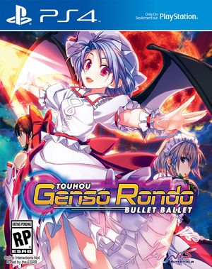

- Welcome to Touhou Wiki!
- Please register to edit. For assistance, check in with our Discord server or IRC channel.
Genso Rondo
Genso Rondo | |
|---|---|
|
 Cover of the North American PlayStation 4 version
| |
| Developer | |
| Publisher |
CUBETYPE |
| Released |
Original version: |
| Genre |
3D Arena Fighting Game |
| Gameplay |
Single-player story mode |
| Platforms |
Windows 2000/XP/Vista/7 |
| Requirements |
|
| Official Site | |
Genso Rondo (幻想の輪舞 Gensou no Rondo, lit. "Circular Dance of Illusion") is a 3D Arena Fighting Fangame, developed and published by CUBETYPE. Originally released for PC on August 11, 2012, at Comiket 82. An updated version was released on May 11, 2015 for PlayStation 4, as part of Play, Doujin! and September 6 and 9, 2016 for the North America and Europe releases respectively under the extended name of "Touhou Genso Rondo: Bullet Ballet" published by NIS America. It was the first Touhou fangame to be released on consoles and to be released in the West. In September 9, 2016, a Spanish release was confirmed by NIS America, to be published by Bandai Namco on September 23, 2016. Prior to its release on PlayStation Network, CUBETYPE reached agreement with Senkou no Ronde developer, G.rev, to license the series.
Gameplay[edit]
Similar to the Senkou no Ronde series, the game is a mashup of both the fighting and shmup genre. The game takes the 1v1 style of fighting games but with bullets as attacks instead. The main goal of the game is to simply defeat the other player through various attacks.
The game has three actions: Attack, dash, and focus. Attack makes the player shoot bullets in a pattern. Attacks have three variations: Basic (Main), Advanced (Sub) and Special (Charge). Each attack varies from each character. Dash makes the player maneuver and evade bullets quickly but they are still vulnerable to attacks. Focus slows down the player in exchange of precise attacks with a higher chance of hitting the opponent. Bullet patterns changes when the player is on focus or dashing.
P and C blocks from the main Touhou games appear for a short while when bullets are cleared on the screen. P blocks raises the player's power, granting them an easier way of defeating the opponent. C blocks raises the player's charge meter for charge attacks and spell cards. Players can also clear and convert surrounding bullets into P and C blocks which requires the consumption of the player's charge.
A player can cast a spell card with the cost of one charge bar by pressing the spellcard button. In this state, the player is given a shorter yet separate lifebar similar to the bosses in the main Touhou games and will be placed in the top center of the stage to attack the opponent. When the lifebar reaches zero or the time runs out, the players will be thrown back at the starting position and the fight continues. However, when the player casts a spellcard when in the EXTEND state, the player will be defeated when the lifebar reaches zero.
A circle is visible with each player. Going inside the circle gives the player the option to perform a special melee attack, which pushes the opponent away.
When a player's life reaches zero, they will be pushed further away from the opponent and converts all bullets into P and C blocks. The player will be given a chance to survive by entering "EXTEND" mode, which the player will only take one hit to be defeated. Players can use this last chance to attack or cast a spell card to defeat the opponent.
Characters[edit]
There are 8 characters to choose from in the original PC version. The PlayStation 4 version, however, adds 4 characters, with 3 of them being DLC. In the PlayStation 4 version, each character has their own story.
Default Characters:
- Reimu Hakurei
- Marisa Kirisame
- Sakuya Izayoi
- Remilia Scarlet
- Alice Margatroid
- Youmu Konpaku
- Sanae Kochiya
- Utsuho Reiuji
PlayStation 4 exclusive characters:
- Yuyuko Saigyouji
- Aya Shameimaru (Requires DLC to play Aya's story and stage BGM)
DLC characters (PlayStation 4 version only):
- Aya Shameimaru (Story mode and stage BGM)
- Flandre Scarlet
- Yukari Yakumo
Character poll[edit]
An online poll was held by NIS America on May 18th for voting a character to be in the game as DLC.
The voters were to choose from 11 characters to vote. These are Byakuren Hijiri, Flandre Scarlet, Koishi Komeiji, Mamizou Futatsuiwa, Fujiwara no Mokou, Patchouli Knowledge, Reisen Udongein Inaba, Seiga Kaku, Tenshi Hinanawi, Yukari Yakumo, and Yuuka Kazami.
Byakuren became the first on the poll for many days until NIS America discovered bots making an imbalance to the poll. After clearing the bots, NIS America shows the actual points of the characters voted, in which Flandre has the most votes.
The poll ended in June 1st with Flandre winning first place at the poll and became available as DLC. Several months later, the second place character, Yukari, was also released as DLC.
Release[edit]
The North American and European PS4 versions were released in September 6 and 9 of 2016 respectively in both physical and digital forms. A limited edition was available to those who pre-ordered the game through GameStop or the NIS store that includes a collector's box, which contains the game, a full-color, hardcover art book, the original soundtrack with jewel case and a set of 5 art prints (6"x 5") and download codes for PlayStation themes (PS4 and Vita), avatars and Aya's story and stage BGM. A 12 button pin set, with each of the characters images, was included as a NIS Store exclusive.
Reception[edit]
The game receieved mixed reviews, ranging from negative to positive but mostly negative. Most critics criticized the game for the lengthy tutorial, lack of unique modes, poor A.I that changes from bad to overly aggressive in other modes except in "VS. COM", shallow story, low-poly models, bland backgrounds and "dead" online servers while positive reviews tend to praise the soundtrack, fast-paced gameplay and colorful bullets and animation. The concept of mixing the bullet hell and fighting genre was either hated or praised.
Rating[edit]
In North America, the game was rated E10+ by ESRB due to fantasy violence, mild language and use of alcohol.
In Europe, the game got a rating of 12+ by PEGI only due to mild bad language.
In Germany, the game was rated 12 by USK.
Gallery[edit]
Concept for the limited edition set
Back cover of the Japanese version
Front cover of the Japanese version
Front cover of the European version
Screenshots[edit]
Original Windows version[edit]
Main menu
Tutorial screen
Story mode dialogue
Character selection screen
Auto-play sequence
PlayStation 4 version[edit]
Main menu of the Japanese version
Main menu of the North America and European versions
The infamous and lengthy tutorial mode
Background when selecting the game in the PlayStation 4 menu
Story mode dialogue
Victory screen
Final Spellcard
Additional Information[edit]
- The story mode of the original version is Reimu's story in the PlayStation 4 version.
- This is the first Touhou fangame to be localized and release for the Western audiences.
- This is the first Touhou fangame to be released on a console.
- Before the localization by NIS America, CUBETYPE released the game on Asian countries including Chinese and English subtitles. However, this led to some mistranslations, wrong grammar and "Engrish" wording.
- One example is in Aya's DLC story in the Asian release where after Sakuya stops time for eight seconds, Aya says "I want you to stop all the time but of mine!" while the NIS America versions corrects this with "I want you to stop time for everyone but me!".
- This might have led to the localization of the game for Western audiences by NIS America.
- Surprisingly enough, the game was never rated with the content being "Minimal Suggestive Themes" or something similar despite the Final Spellcard artworks and poses of characters are sometimes can be depicted as somewhat suggestive, like Yuyuko's Final Spell pose for example.
Trailers[edit]
Original PC Trailer:
PlayStation 4 Debut Trailer (Japan):
PlayStation 4 Debut Trailer (North America):